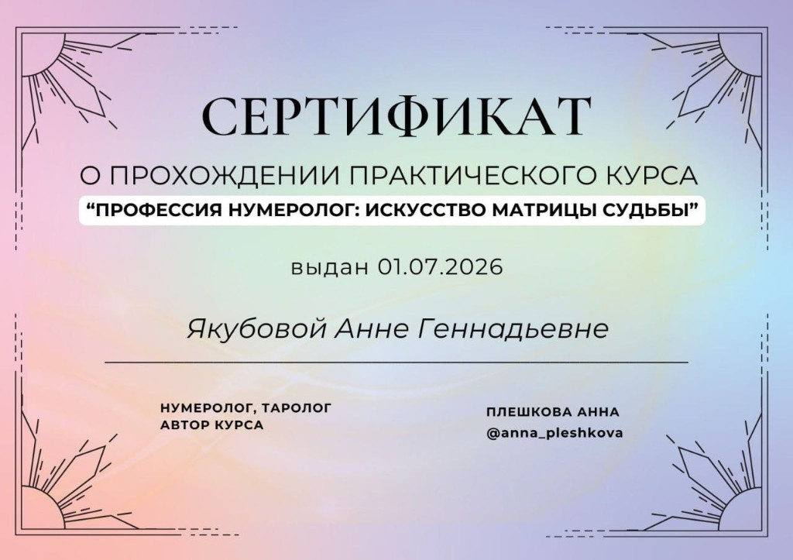
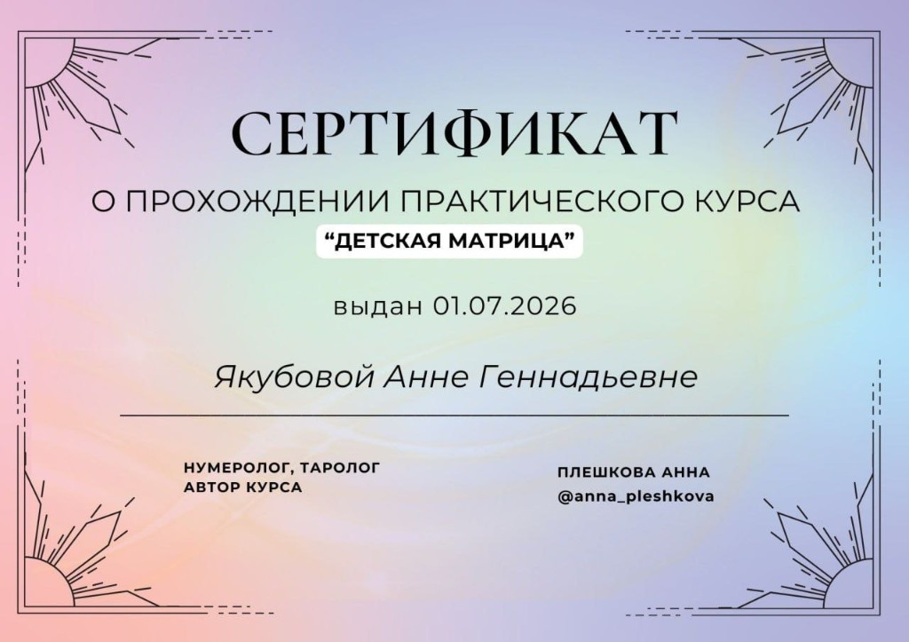

Матрица Судьбы
Матрица Судьбы — это ценнейший инструмент самопознания в нумерологии.
Каждый из нас приходит в этот мир через рождение — и самое первое, что мы узнаём о новом человеке, это его дата рождения. Эта дата навсегда отпечатывается во времени и формирует Матрицу Судьбы, которая может вести и помогать по жизни — если знать, как применять её на практике.
Матрица — это схема психических энергий в момент рождения человека.
Она содержит информацию про:
- Личность характеристика личности, личная сила, зона душевного комфорта
- Любовь любовь и отношения с людьми
- Таланты таланты и способности
- Деньги деньги и предназначение
- Род и миссия сила рода, жизненные цели, миссия
Форматы работы
Индивидуальные консультации, разбор матрицы для пар и семей, детская матрица, прогностика, личный финансовый код. Подробности о ближайших событиях — в Личном дневнике.
Сертификация
Профессиональное обучение Матрице Судьбы
Анна Якубова прошла практические курсы по методу Матрицы Судьбы у нумеролога и таролога Анны Плешковой.


Доверяйте разбор своей матрицы только обученным специалистам